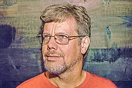

GUIDO VAN ROSSUM
About 
Guido van Rossum is a Dutch programmer (born 31 January 1956) best known as the creator of the Python programming language, for which he was the "Benevolent dictator for life" (BDFL).
Life & Education
Van Rossum was born and raised in the Netherlands, where he received a mster's degree in mathematics and computer science from the University of Amsterdam in 1982. He has a brother, Just van Rossum, who is a type desginer and programmer who designed the typeface used in the "Python Powered" logo.
Van Rossum lives in Belmont, California, with his wife, Kim Knapp and their son. According to his home page and Dutch naming conventions, the "van" in his name is capitalized when he is referred to by his surname alone, but not when using his first and last name together.
Career
Van Rossum worked at the Centrum Wiskunde & Informatica (CWI) early on in life. He has worked for various other research intstitutes like the U.S. National Institute of Standards and Technology (NIST), and the Corporation for National Research Initiatives (CNRI). From 2000 until 2003 he worked for Zope corporation. In 2003 VAn Rossum left Zope for Elemental Security. While there he worked on a custom programming language for the organization. From 2005 to December 2012, he worked at Google, where he spent half of his time developing the Python language. In January 2013, he started working for the cloud file storage company Dropbox. Van Rossum has a few notable elements in his career amongst which are his contribution to the ABC programming language and others.
While working at the CWI, Van Rossum wrote and contributed a glob() routine to BSD Unix in 1986 and helped develop the ABC programming language. He once stated, "I try to mention ABC's influence to everything I learned during that project and to the people who worked on it."
In December 1989, Van Rossum had been looking for a "'hobby' programming project that would keep [him] occupied during the week around Christmas" as his office was closed when he decided to write an interpreter for a "new scripting language [he] had been thinking about lately: a descendant of ABC that would appeal to Unix/C hackers". He attributes choosing the name "Python" to "being in a slightly irreverent mood (and a big fan of Monty Python's Flying Circus)".
He has explained that Python's predecessor, ABC, was inspired by SETL, noting that ABC co-developer Lambert Meertens had "spent a year with the SETL group at NYU before coming up with the final ABC design".
In 1999, Van Rossum submitted a funding proposal to DARPA called "Computer Programming for Everybody", in which he further defined his goals for Python:
Open source, so anyone can contribute to its development.
Code that is as understandable as plain English.
Suitability for everyday tasks, allowing for short development times.
In October 2019, Van Rossum left Dropbox and officially retired.